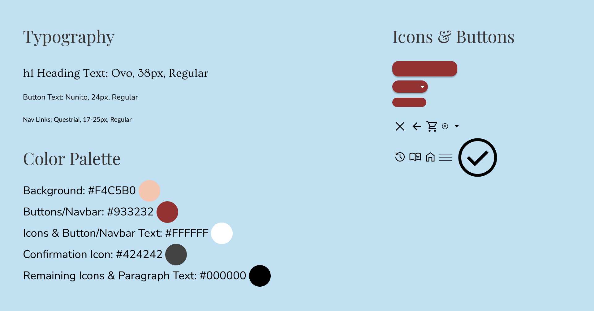

Initial Designs
I began by ideating some ideas for the home page with some starting sketching of low fidelity wireframes. I found myself prefering the simpler, more minimalistic sketches. I often like "less is more" designs for their ability to immediately let the user know where they are, and what their options are, while avoiding confusing the user or making the app or website feel cluttered.
I similarly came up with initial lo-fi wireframes of a few other pages of the app.
Visual Design & Mockups
With the underlining designs of the app's pages known, it was time to bring them to life through color, typography, and iconography. After finding a background image that I liked for the home page, I looked for a red that would compliment it well. I went on to use this red for elements such as buttons and the navbar at the top. I then found fitting typefaces to use for heading text, body text, and button text. After gathering a few needed icons, it was time to start putting together high fidelity mockups.

As always, it's important to check that the foreground colors contrast well with the background colors. Compared to the background, the black heading text has a contrast ratio of 13.46:1. The white button text, compared to the red buttons, has a contrast ratio of 7.65:1. Both align well with accessibility guidelines.
These colors, typefaces, and styles were used for the rest of the pages to maintain consistency throughout the app. A simple style guide was now ready to be made:
For the menu page, I found that a single column, scrollable layout made for a simple and intuitive design. A drop-down menu option lies on the top right to filter which items are displayed on the menu. At first, I considered making a seperate page for the specific item that a user would be taken to after clicking "View" on, but I thought that a simpler design would be for a box to slide upward onto the screen and display the product information and options.

The gestalt principle of similarity is used in the menu. Each menu item is displayed within equally sized boxes, and each has an associated image, title, secondary title, and "View" button. This consistent similarity makes it pretty clear and intuitive that these are all menu items. Common region is another gestalt principle exercised here. An item's image, title, secondary title, and button are grouped together by being contained within a box.
After pressing the "Add to cart" button, the product information box could simply slide back down. However, it could potentially confuse the user if no confirmation of their action is provided. Therefore, I decided that a new box would slide in from the right, letting the user know that they've successfully added the item to the cart.
Remaining Mockups
The same visual styles were used to create the remaining pages.

Consistency is a really important aspect of creating a UI. A sense of familiarity should build as a user moves through an app or website. In addition to the same color scheme being used throughout the app, the same three fonts are used depending on the role of the text, each price is bold, and each drop shadow is the same.
Side by side, the mockups of the main user flow:
As well as the order history page and the navigation which will slide in from the left when the top left hamburger menu is pressed:
Takeaways
This project was a fun way to practice some visual design principles! Something in particular that I think can be learned from the design is the potential that negative space has to make a UI feel intuitive. The home page leaves little room for confusion, as it simply greets the user with the image of a cup of coffee, the corresponding color scheme, the "Time for coffee?" heading, and two options of where to go. The less crowded a page is, the easier it will be to use.
Back to projects